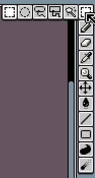
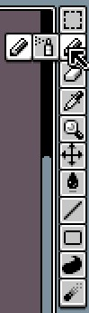
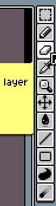
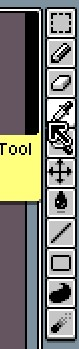
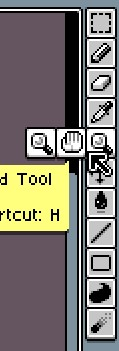
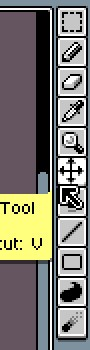
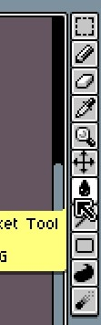
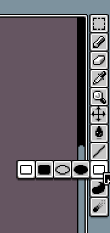
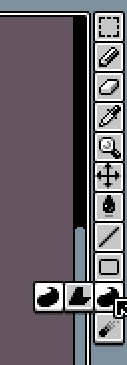

Panel de herramientas
|

Herramienta de Selección
|

Herramienta de Dibujo
|

Herramienta de borrador |

Herramienta de Cuenta gotas |

Herramienta de Vista
|

Herramienta de Movimiento |

Herramienta de pintura |

Herramienta de Linea
|

Herramienta de Rectangulo
|

Herramienta de Contorno
|

Herramienta de Difuminado
|